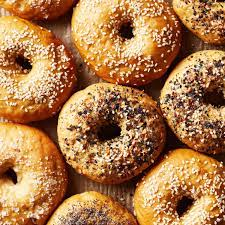

Anything Bagel

Description
How to eat bagel.
Ingredients
- Water
- Bagel
- Oven / toaster oven
- Whatever you want in your bagel
Instructions
- Leave your bagel whole and coat the entire exterior with a little water
- Put your whole bagel in your oven to toast for 5-6 minutes
- Prepare whatever you want to put in your bagel
- Once the exterior of the bagel feels crispy, take it out of the oven
- Put whatever you want in your bagel (maybe some ElsonLabs' egg salad)
- Enjoy.